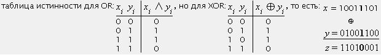

Как ни странно, но самым простым и одним из самых эффективных (при правильном использовании) алгоритмов шифрования является так называемое XOR-шифрование. Попробуем рассмотреть идею этого наипростейшего метода.
Как известно из булевой алгебры, операция логического сложения «?» по модулю 2 (или логического исключаещего ИЛИ — XOR, eXclusive OR) имеет следующую семантику:

То есть, операция z = x ? y по сути поразрядная (побитовая — результат не зависит от соседних битов). Если только один из соответствующих битов равен 1, то результат 1. А если оба 0 или оба 1, то результат 0. Если внимательно посмотреть на результат применения XOR к двум двоичным числам, то можно заметить, что мы можем восстановить одно из слагаемых при помощи второго: x = z ? y или y = z ? x.
Отсюда можно сделать следующие выводы: зная число y и применяя XOR к x, мы получим z. Затем, мы, опять же используя y, получим из z обратно число x. Таким образом мы можем преобразовать последовательность чисел (x)i в последовательность (z)i. Теперь мы можем назвать число y кодирующим (или шифрующим) ключом. Если человек не знает ключа, то он не сможет восстановить исходную последовательность чисел (x)i. Но если (x)i являются байтовым представлением букв текста, то опытный пользователь сможет вскрыть зашифрованный текст. Поскольку каждая буква будет представлена в шифротексте одним и тем же кодом z, то воспользуясь частотным словарем взломщик сможет вычислить шифрующий ключ y, если у него будет в распряжениии достаточно длинный шифротекст.
Сообщение:
{{d_final}}
Сообщение:
{{e_final}}